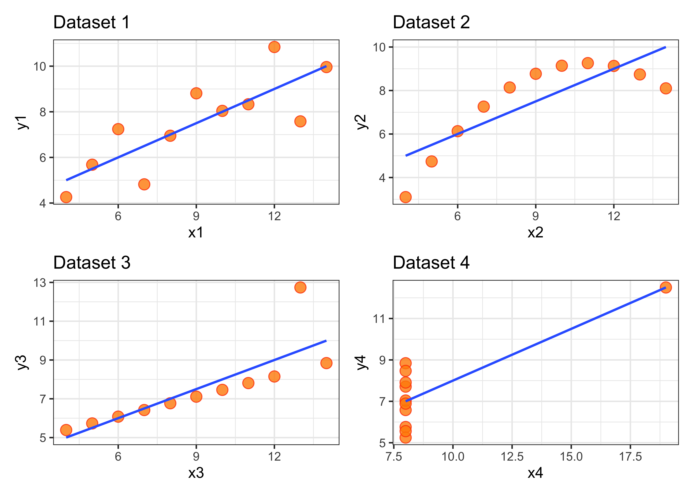

Квартет Энскомба представляет собой 4 набора данных с одинаковыми описательными статистиками (среднее, дисперсия, коэффициент корреляции), но с очень разными распределениями данных. Каждый набор содержит 11 значений (x, y). Francis Anscombe предложил эти наборы данных в 1973 году [1] в качестве иллюстрации важности полагаться не только на описательные статистики, но и визуализацию данных.
Этот набор данных встроен в R (вызвать можно просто набрав anscombe в консоли).
# еще простой способ отразить большинство описательных статистик - просто вызвать функцию summarysummary(anscombe)
x1 x2 x3 x4 y1
Min. : 4.0 Min. : 4.0 Min. : 4.0 Min. : 8 Min. : 4.260
1st Qu.: 6.5 1st Qu.: 6.5 1st Qu.: 6.5 1st Qu.: 8 1st Qu.: 6.315
Median : 9.0 Median : 9.0 Median : 9.0 Median : 8 Median : 7.580
Mean : 9.0 Mean : 9.0 Mean : 9.0 Mean : 9 Mean : 7.501
3rd Qu.:11.5 3rd Qu.:11.5 3rd Qu.:11.5 3rd Qu.: 8 3rd Qu.: 8.570
Max. :14.0 Max. :14.0 Max. :14.0 Max. :19 Max. :10.840
y2 y3 y4
Min. :3.100 Min. : 5.39 Min. : 5.250
1st Qu.:6.695 1st Qu.: 6.25 1st Qu.: 6.170
Median :8.140 Median : 7.11 Median : 7.040
Mean :7.501 Mean : 7.50 Mean : 7.501
3rd Qu.:8.950 3rd Qu.: 7.98 3rd Qu.: 8.190
Max. :9.260 Max. :12.74 Max. :12.500
Можно увидеть, что описательные статистики совпадают. Что насчет распределения данных?
Построим графики распределения значений
Show the code
# отрисовываем графики по очередиp1 <-ggplot(anscombe, aes(x1,y1))+geom_point(size =3.5, fill ='darkorange', color='orangered', alpha =0.8, shape =21)+labs(title ="Dataset 1" ) +geom_smooth(se =FALSE, method ="lm", formula ="y ~ x", size =0.8, alpha =0.9)+theme_bw()
Warning: Using `size` aesthetic for lines was deprecated in ggplot2 3.4.0.
ℹ Please use `linewidth` instead.
Show the code
p2 <-ggplot(anscombe, aes(x2,y2))+geom_point(size =3.5, fill ='darkorange', color='orangered', alpha =0.8, shape =21)+labs(title ="Dataset 2" ) +geom_smooth(se =FALSE, method ="lm", formula ="y ~ x", size =0.8, alpha =0.9)+theme_bw()p3 <-ggplot(anscombe, aes(x3,y3))+geom_point(size =3.5, fill ='darkorange', color='orangered', alpha =0.8, shape =21)+labs(title ="Dataset 3" ) +geom_smooth(se =FALSE, method ="lm", formula ="y ~ x", size =0.8, alpha =0.9)+theme_bw()p4 <-ggplot(anscombe, aes(x4,y4))+geom_point(size =3.5, fill ='darkorange', color='orangered', alpha =0.8, shape =21)+labs(title ="Dataset 4" ) +geom_smooth(se =FALSE, method ="lm", formula ="y ~ x", size =0.8, alpha =0.9)+theme_bw()# объединяем их в один плот с помощью библиотеки `patchwork`(p1 | p2) / (p3 | p4)

Итак, как и ожидалось, распределения данных оказались совершенно разными. Подчеркну еще раз важность визуализации данных перед началом анализа. Не стоит опираться только на средние, медианы, дисперсию, поскольку эта информация должна дополняться визуальным представлением данных, даже хотя бы для себя.
Еще вот такой пример обманчивых описательных статистик:
обратите внимание на датазавтра наверху
Кроме того, рекомендую строить диаграммы рассеяния (scatter plot) как в коде, приведенном выше, а не опираться только на боксплоты (boxplot), к примеру. Боксплоты сокращают информацию о данных, хотя и являются стандартом на конференциях и в публикациях. Про это можно почитать здесь. Думаю, для публикации неплохим вариантом могут быть violin plots или боксплоты с полупрозрачными точками, отрисованные с помощью geom_jitter (примеры применения можно посмотреть в статье про пределы погрешностей). Правда, это лучше сработает, если точек не больше ~30, на мой взгляд, иначе график будет сильно рябить.
О корректной, не вводящей в заблуждение читателя визуализации данных написано уже немало статей и книг, пока что приведу несколько ссылок для самостоятельного ознакомления:
Лекция Дженни Брайан (Jenny Bryan) о предобработке данных перед построением графиков